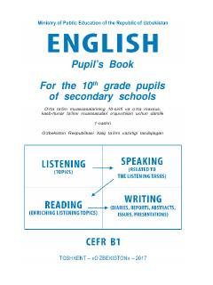

IT10-sinf o'quvchilari uchun ingliz tili fani bo'yicha davlat ta'lim standartiga mos darslik.
Ushbu darslik O'zbekiston Respublikasi Xalq ta'limi vazirligi tomonidan tasdiqlangan bo'lib, umumiy o'rta ta'lim maktablarining 10-sinf o'quvchilari uchun mo'ljallangan. Kitob CEFRning B1 darajasiga moslashtirilgan bo'lib, tinglab tushunish, gapirish, o'qish va yozish ko'nikmalarini rivojlantirishga qaratilgan.